Question : Retrouver sur le document les huit phases et leur ordre ; vérifier que la moitié éclairée de la Lune est toujours tournée vers le Soleil.
Consulter le document ↗SCHÉMAS, PHOTOGRAPHIES ET SOURCES
Atlas visuel
25 schémas originaux, des photographies créditées et 12 documents de missions à consulter en ligne. Les schémas sont des modèles : ils ne respectent pas les échelles, sauf mention contraire.
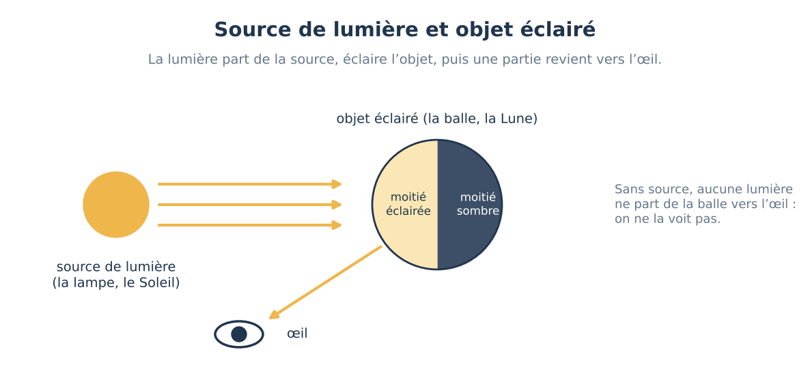
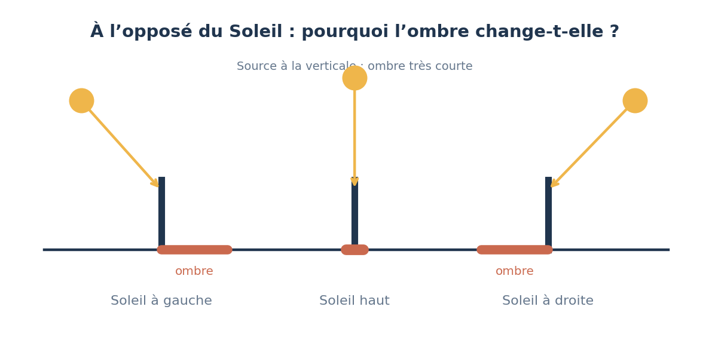
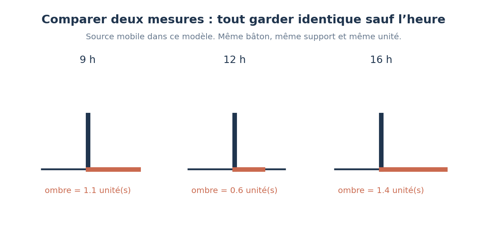
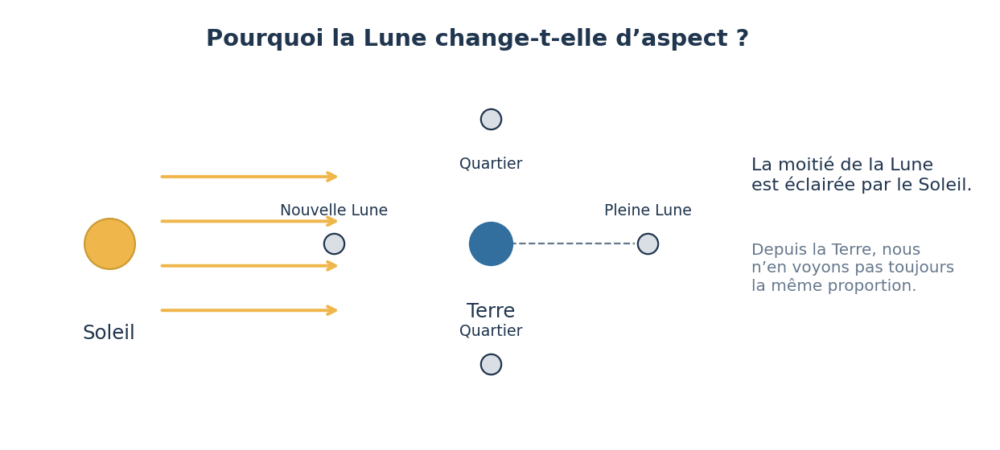
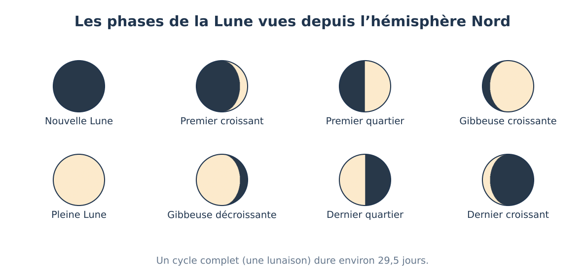
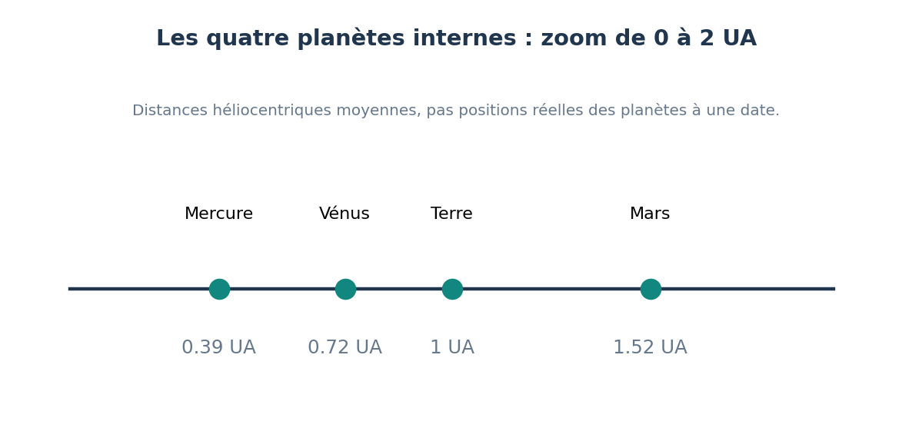
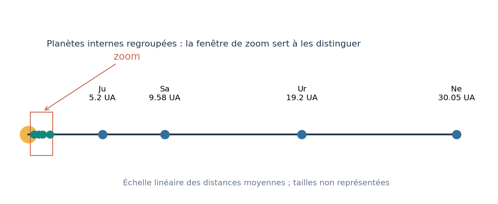

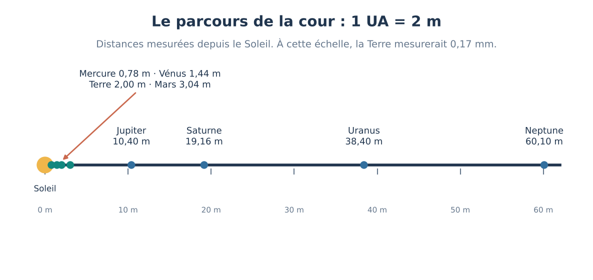


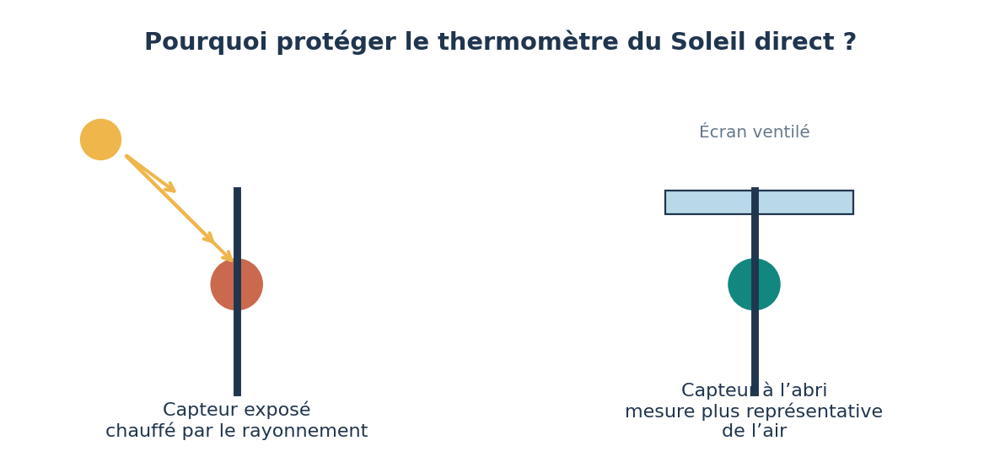
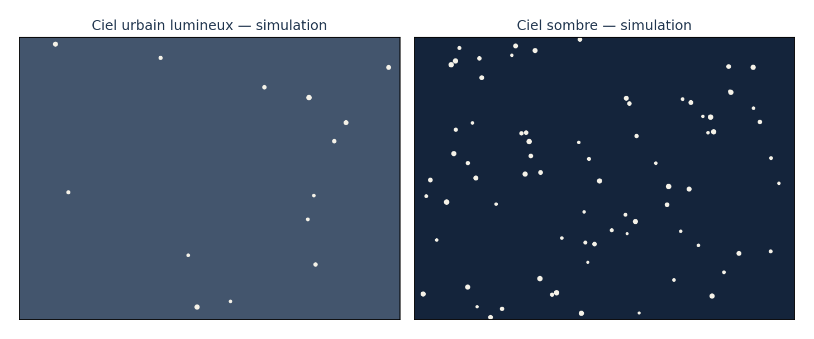

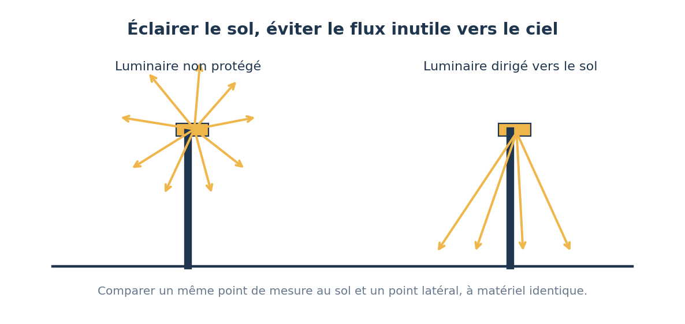
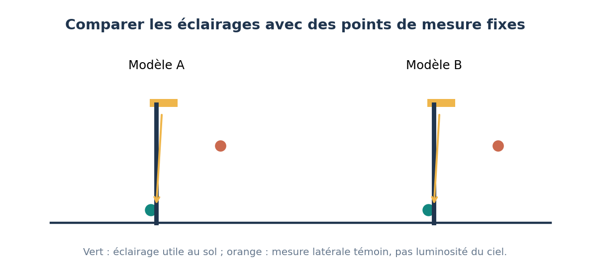
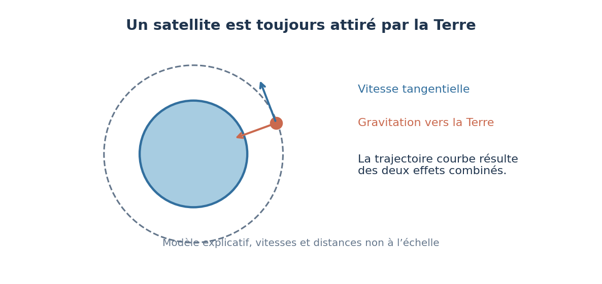


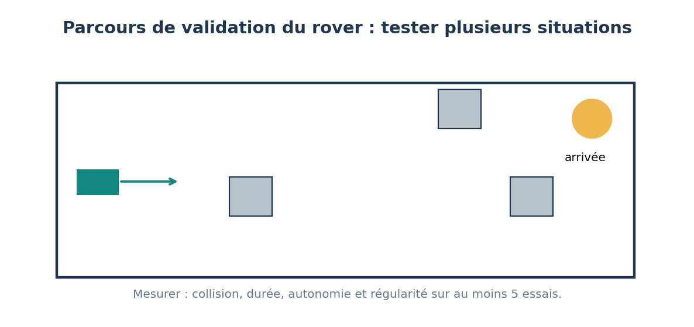
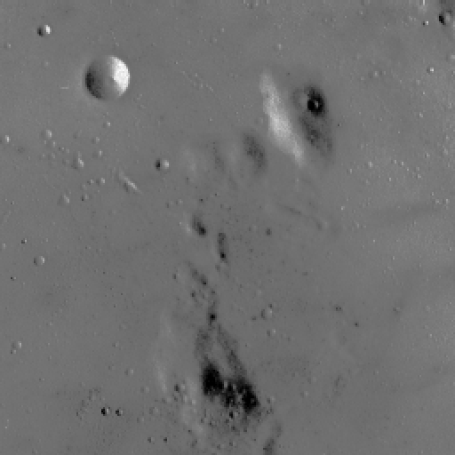
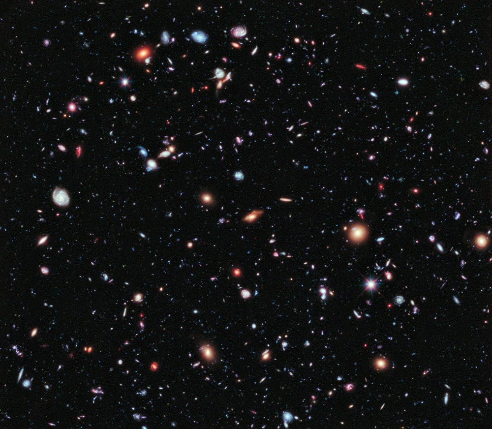
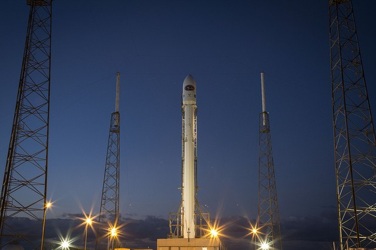
RESSOURCES EN LIGNE
12 documents de missions à analyser
Ces pages sont en anglais : prévoir une lecture guidée, éventuellement avec le professeur de langue.
Question : Utiliser les ressources pour compléter le carnet les soirs nuageux.
Consulter le document ↗Question : Retrouver l’ordre des planètes et repérer ce que ce montage ne montre pas à l’échelle.
Consulter le document ↗Question : Pourquoi la Terre n’occupe-t-elle qu’une fraction de pixel sur cette image ?
Consulter le document ↗Question : Repérer la limite jour-nuit sur la photographie et l’expliquer avec le globe éclairé.
Consulter le document ↗Question : Ces lumières viennent-elles du Soleil ?
Consulter le document ↗Question : Pourquoi a-t-il fallu accumuler la lumière pendant des centaines d’heures pour obtenir cette image ?
Consulter le document ↗Question : Que montre cette image de la lumière envoyée vers le ciel ?
Consulter le document ↗Question : Pourquoi la végétation apparaît-elle en rouge sur certaines images ?
Consulter le document ↗Question : Identifier l’instrument, les données et le traitement ayant permis de construire cette image.
Consulter le document ↗Question : Repérer les instruments du rover et expliquer pourquoi ce « selfie » n’est pas une photo unique.
Consulter le document ↗Question : Comment le rover a-t-il trouvé sa position sans attendre les calculs de la Terre ?
Consulter le document ↗